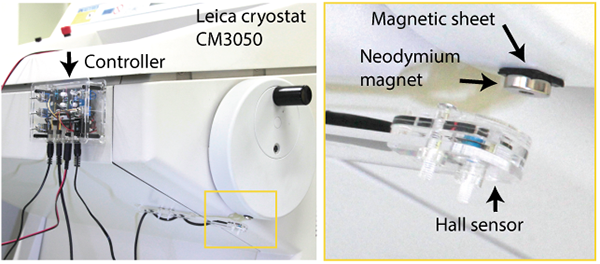
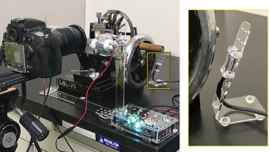
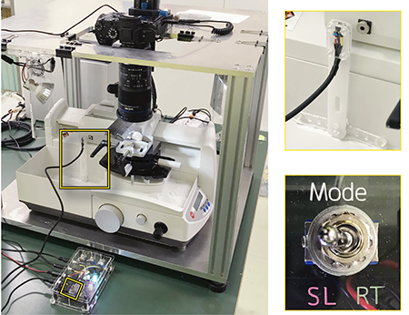
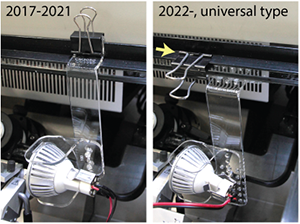
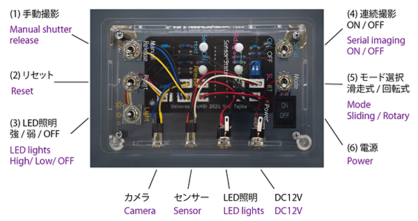
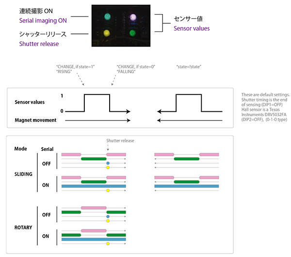
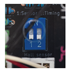
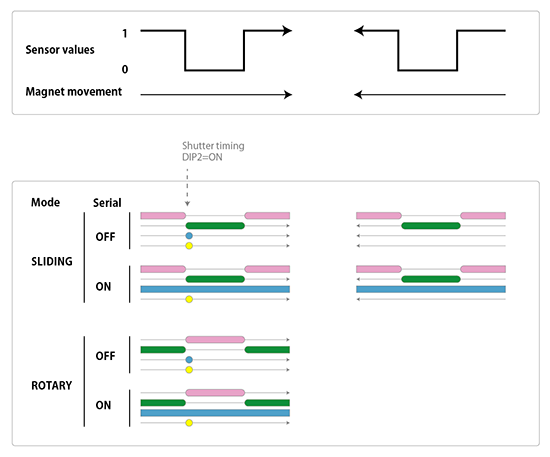

CoMBI-Universal /ユニバーサル型、2021-current
概要/Overview
- Initial setup includes attaching magnets to handles or moving parts, determining sensor positions, and setting up the camera for CoMBI.
- Prepare the specimen block.
- Set up the camera and sensor, etc., and align the anglea of the camera and block. Slice the block little by little, and align the angle and position of the camera and block, carefully.
- When the specimen is about to be exposed, set the exposure of the camera and start serial blockface imaging.
- Collect sections as required.
- 初期設定として、ハンドルや可動部に磁石を添付、センサー位置決定、カメラのCoMBI用設定
- ブロックを準備する
- カメラとセンサー等を設置し、カメラの角度とブロックの角度をあわせる。面出しを少しずつ進めて、カメラやブロックの角度と位置を合わせていく。
- 試料が露出しそうなところで、カメラの露出設定、ブロック面の連続撮影を開始する。
- 切片は、必要な場合に、必要な分だけ、採取する。



Initial setup/初期設定
- Attach the controller and sensor. They are easy to remove as they are attached using magnets.
- Check the location of the power supply and cable length for the controller (12V), PC (optional), and camera (in case of AC adapter).
- Attach a magnet to the handle, and adjust the position of the sensor.
- Attach a neodymium magnet to the handle or other moving part of the microtome. Neodymium magnets (10 x 2 mm) are attached via rubber magnetic plate with adhesive tape. If the microtome is one of common facilities, please negotiate and announce that the rubber magnetic plate remains attached. The plate is only 1 mm-thick, so it should not affect regular operation. If the handle is magnetic, attach neodymium magnat directly (no need to use a rubber magnet plate magnet for intervention).
- Adjust the sensor position. The distance from the sensor (surface of the acrylic plate) to the magnet surface should be between 5 and 15 mm. If it is out of this range, adjust the distance by increasing or decreasing the spacer, or by stacking two neodymium magnets.
- Turn on the power, and turn the handle. LED indicators will tell you the sensor value and shutter timing.
- Adjust the detection position so that the sensor works when the block is at the top most. Since it is a single vibration, it is better to shoot at the top end to minimize blur. (In the CM3050 cryostat, the best position is 1-2 cm apart from the lock position. So you can also use the lock function.)
- Set the camera for CoMBI.
- Set the time (main menu) Set the camera to CoMBI * Set the time (main menu) * Set the image format to RAW (recommended) (main menu)
- Allow release shooting (PC app?)
- Allow release without lens (main menu)
- Exposure mode is set to Manual (main unit button).
- Focus mode is also manual (slide switch on the camera body or lens).
- Exposure settings are made for each experiment. Typically, shutter speed 1/500-1/125, ISO 100-800, aperture one stop down from full-open.
-
Connect the camera to the CoMBI controller.
- Connect the camera to the CoMBI controller. Turn
Serial ON, and operate the handle. Check if the shutter is released when the sensor passes the magnet. - Two LED illuminate diagonally. High (12V) or Low (9V). 
Photo: Example of CoMBI-U with Leica CM3050 cryostat. Old type (2017-2021) has a simple design but is only compatible with CM3050 and some others. New type (2022-) is compatible with any cryostat model, and adjustable in position and angle. Clipping directly to the glass is NOT recommended (arrow).
- Brushes keep the block clean. Highly recommend to use the anti-roll plate, which is effectively clean the block, more than brushes.
- (optional) Connect the camera to your computer. See "Tethering".
- File transfer settings (app): save the file to the PC and, also to the SD card, if possible.
- If Nikon user wants to transfer for free, you can use freeware, "Darktable".
- Connect the camera to the CoMBI controller. Turn
- コントローラとセンサーを設置する。磁石で設置するので、取り外しも簡単です。
- コンセントの位置を確認します。コントローラ（12V）、パソコン（オプション）、カメラ（ACアダプタの場合）に供給できる環境を整えます。
- ハンドルに磁石を貼り付ける、センサーの位置を調整する。
- ミクロトームのハンドルなど、動く部分にネオジム磁石を貼り付けます。接着テープ付きのゴム板磁石を介して、ネオジム磁石（10 x 2 mm）を付けています。ミクロトームが共通機器の場合、ゴム板磁石だけは貼り付けたままにするよう交渉・告知してください。ゴム板磁石は、厚さ1 mmなので通常の操作には影響ないはずです。直接、磁石がくっつくタイプのハンドルであれば、介在用のゴム板磁石は必要ありません。
- センサー位置の調節。センサー（アクリル板表面）から磁石表面までの距離は、5〜15ミリの間にします。もしこの範囲からはずれる場合、スペーサを増減させるか、磁石を2枚重ねるかで、距離を調整します。
- 電源をいれて、ハンドルを回すと、LEDがセンサー値やシャッターのタイミングを知らせてくれます。
- ブロックが最も上にきたところで、センサーが働くように検出位置を調整する。単振動なので、上端で撮影したほうが、ズレが少ない。（クリオスタットCM3050では、ロックレバーがロック位置から1-2センチ過ぎたところでした。ですので、ロック機能もつかえます。）
- カメラをCoMBI用に設定する
- 時刻合わせ（本体メニュー）
- 画像形式はRAW（推奨）（本体メニュー）
- レリーズ撮影の許可（パソコン側？）
- レンズなしレリーズを、許可（本体メニュー）
- 露出モードは、Manual。（本体ボタン）
- フォーカスモードも、Manual。（本体かレンズにスライドスイッチ）
- 露出設定は、実験ごとに行います。大まかには、シャッター速度1/500-1/125、ISO100-800, 絞りは開放から1つ絞ったところを使います。
- カメラとCoMBIコントローラをつなげてみます。
Serial ONで、ハンドルを回し、センサーが磁石を通過したときに、シャッターがきれるか確認します。
- その他のCoMBI部品も付けてみて、動作確認します。
- LED照明の取り付け 斜めから2灯。12Vなら強、9Vなら弱。上の写真はクリオスタットCM3050の例です
- ブラシ、ブロックをキレイに保つ。ブラシよりも、クリオスタット付属のアンチロールプレートのほうが効果的に削りカスを除けます。
- カメラとパソコンをつなげてみます（オプション）。くわしくは、"Tethering"
- ファイル転送の設定。PC保存と、できればSDカードにも保存するようにアプリで設定します。
- Nikon機でテザリング撮影を無料でやる場合、Darktableというアプリをおすすめします。
How each part works/各部の動作
Controller/コントローラ

LED indicator/LED表示器

DIP switches/DIPスイッチ
 Normally, the DIP switches do not need to be operated. A figure below shows an example：If you use a sensor, Unisonic SK8552, and set shutter timing at the beginning of sensing (DIP 1: ON、2: ON)
通常、いじることはありません。デフォルトでは、Texas Instruments製磁気センサーで製作し（DIP1 OFF）、シャッタータイミングを検出終了時（DIP2=OFF）にしています。下の例は、Unisonic製SK8552でセンサーを製作し（シグナル反転タイプ）、シャッタータイミングを検知開始時にした場合です（DIP 1: ON、2: ON）

Frozen blocks/凍結ブロック
See "Frozen block".
凍結ブロックの準備を参照してください。
Paraffin blocks/パラフィンブロック
See "Paraffin block"
パラフィンブロックのページを参照
Adjusting the angle of the specimen block/凍結ブロックの角度調整
See "a section of CoMBI-C" for adjusting the angle of the specimen block.
凍結ブロックの角度調整に関しては、CoMBI-Cの一節をご覧ください。
Camera settings/カメラの設定
See "Camera settings" for detailed information about exposure time, iris, and others.
露出や絞りなど、カメラの設定については、Camera Settingsをご覧ください。
Operation/操作
Rotary type microtome/回転式ミクロトーム
- Select mode by switch 5 as RT (rotary).
- Adjust positions of the specimen and camera.
- Capture a scale image using a switch 1 (Manual release).
- Turn switch 4 on (Serial ON)...
- Start serial imaging.
- モードを選択する。スイッチ5で、回転式(RT)を選ぶ
- 標本やカメラの位置を合わせる。
- スケールを撮影する。スイッチ1（Manual release）で、一枚だけ手動撮影する。
- スイッチ4で、連続撮影ONにして...
- 連続撮影を開始する。
Sliding type microtome/滑走式ミクロトーム
- Select mode by switch 5 as SL (sliding).
- Adjust positions of the specimen and camera.
- Capture a scale image using a switch 1 (Manual release).
- Move the handle to the front and press switch 2 (Reset) once. This will set the shutter release in the front-to-back direction (= when the handle moves from front to back). If the handle is placed backward and Reset, the shutter will be released in the back-to-front direction.
- Turn switch 4 on (Serial ON)...
- Start serial imaging.
- モードを選択する。スイッチ5で、滑走式(SL)を選ぶ
- 標本やカメラの位置を合わせる。
- スケールを撮影する。スイッチ1（Manual release）で、一枚だけ手動撮影する。
- ハンドルを前に移動させ、スイッチ2（Reset）を一度押す。これによって、ハンドルが前から後ろへ移動する方向でシャッターが切れる。もし、ハンドルを後方に置き、Resetした場合、後ろから前の方向でシャッターが切れる。
- スイッチ4で、連続撮影ONにして...
- 連続撮影を開始する。